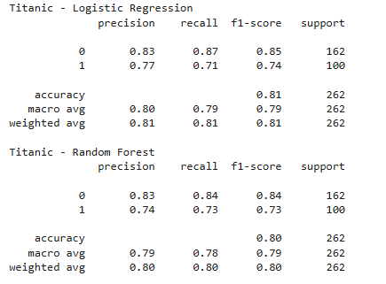
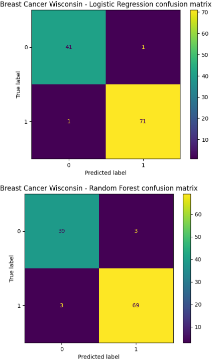
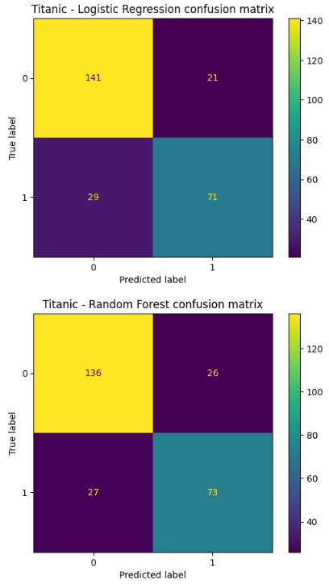
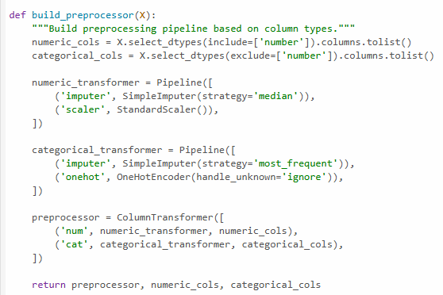

What it does
This project compares Logistic Regression and Random Forest on two binary classification tasks with different characteristics, then explains why performance changes across datasets rather than just reporting scores.
Experimental • Machine Learning • Scikit-learn
A notebook-based machine learning project comparing two common classifiers across two binary classification datasets, with emphasis on preprocessing, model behavior, and why performance changes depending on data structure.
Overview
This project compares Logistic Regression and Random Forest on two binary classification tasks with different characteristics, then explains why performance changes across datasets rather than just reporting scores.
I wanted to create a machine learning project that focused on reasoning, preprocessing, and model selection rather than only treating evaluation as a leaderboard exercise.
Python, scikit-learn, pandas, NumPy, matplotlib, and Jupyter Notebook.
Project Media

Notebook output comparing accuracy, precision, recall, and F1-score across both datasets.

Confusion matrices for Breast Cancer Wisonsin dataset.

Confusion matrices for Titanic dataset.

Notebook section showing imputation, encoding, scaling, or the scikit-learn pipeline structure.
Implementation
The project compares model behavior across two different binary classification datasets: Breast Cancer Wisconsin and Titanic. One is smaller, cleaner, and fully numerical, while the other is messier and includes mixed data types with missing values.
Logistic Regression was used as a strong baseline model, while Random Forest was included as a more flexible tree-based ensemble capable of capturing non-linear interactions.
The notebook applies a structured preprocessing workflow including numerical imputation, categorical imputation, one-hot encoding, feature scaling, and a stratified train/test split to keep the comparison reproducible and fair.
Instead of relying only on accuracy, the comparison also includes precision, recall, F1-score, and confusion matrices to better explain model behavior.
Results
More flexible models are not automatically better. This project shows how dataset structure and problem scale can make a simpler model perform better.
The comparison highlights how careful preprocessing supports fair evaluation and helps explain why results differ across datasets.
This project is designed to be easy to discuss in interviews because it focuses on reasoning, trade-offs, and interpretation rather than only final metrics.
Challenges
In this comparison, Logistic Regression outperformed Random Forest on both datasets, but the main lesson is not that one algorithm is universally better. The lesson is that model choice should be grounded in the data, the problem, and the evaluation context.